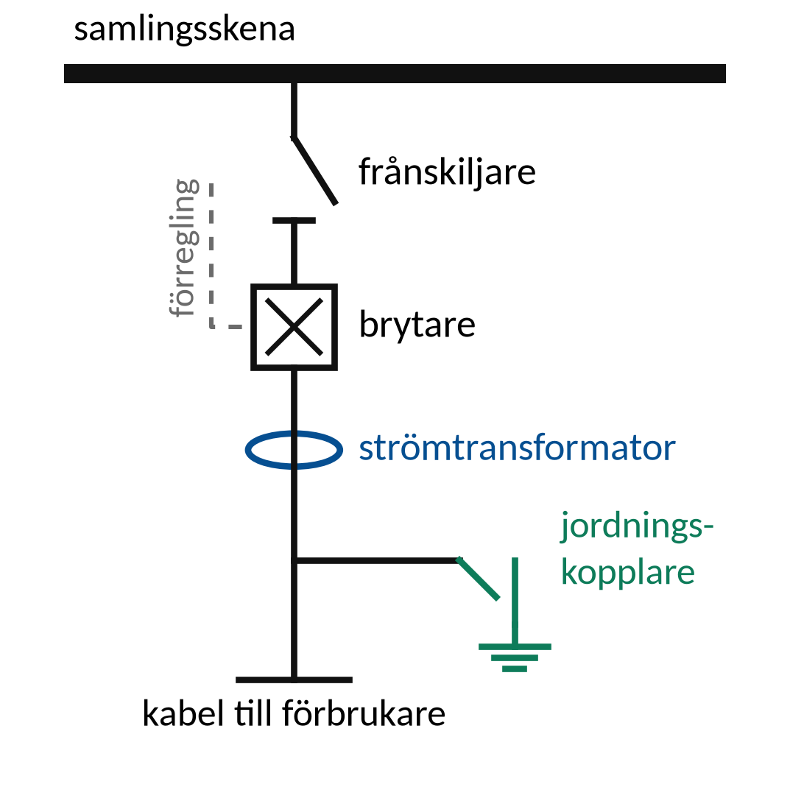
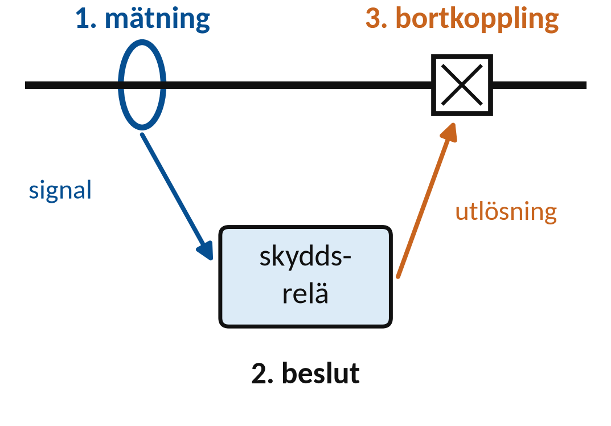
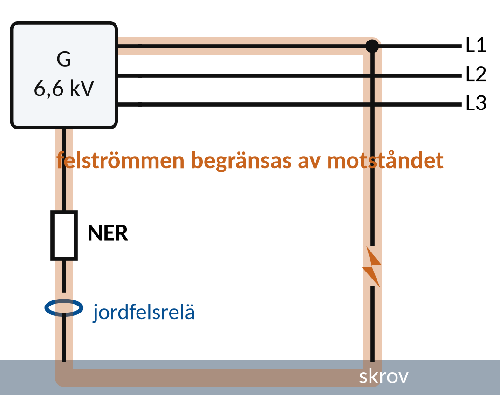
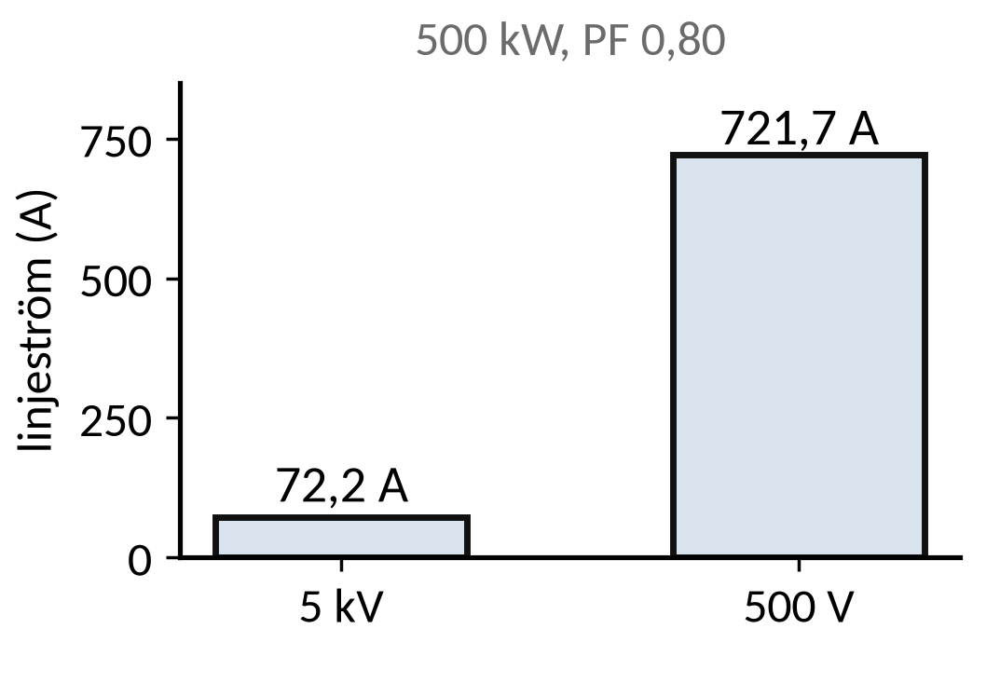
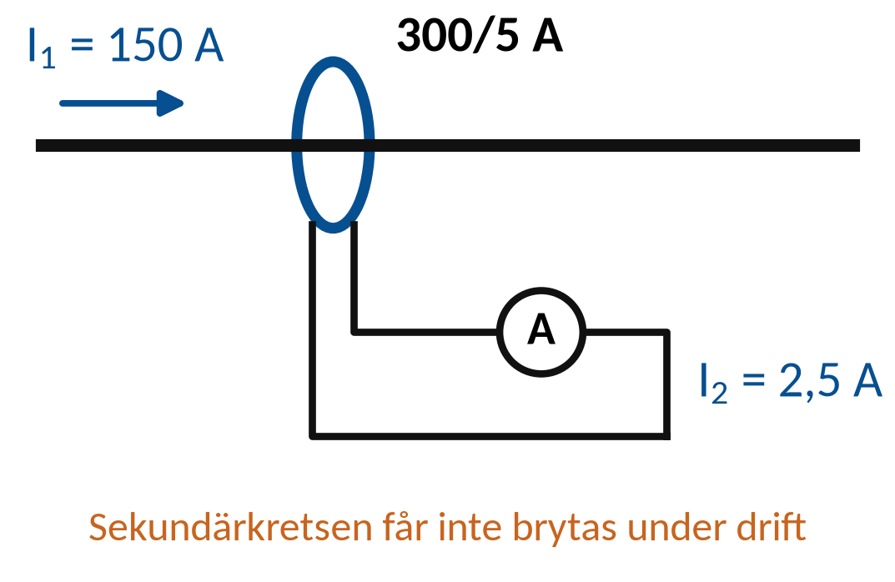
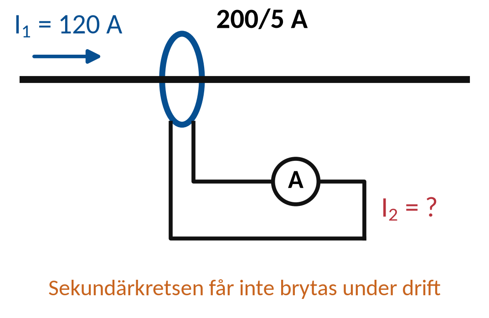

Vecka 44 · Del 2 av 3
Del 2: Högspänningssystem
1 Översikt
Det här ska du kunna
- Beskriva högspänningssystemets viktigaste funktioner.
- Identifiera nödvändigt underlag för säkra arbetsgränser.
Fundera först: Varför kan samma effekt överföras med lägre ström vid högre spänning? Svaret finns i teorin nedan.
Så gör du
- Läs teorin ett avsnitt i taget (8 korta avsnitt). Sist i varje avsnitt står vilka övningar du kan göra direkt.
- Följ exemplen med papper och räknare, steg för steg. Gissa nästa steg innan du läser det.
- Gör övningarna 2.1–2.10. Fastnar du: Ledtråd 1 visar vilket samband du behöver och var i teorin det förklaras. Ledtråd 2 visar hur du börjar och Ledtråd 3 exemplet som räknar samma sorts uppgift med andra tal. Öppna facit när du har ett eget svar.
- Lämna in veckans uppgifter: Veckans inlämning.
Så skriver du en lösning som går att följa
1. Givet och sökt
Skriv av värden, enheter och vad du ska bestämma.
2. Samband och villkor
Välj formel eller princip. Kontrollera koppling, driftfall och antaganden.
3. Uträkning och kontroll
Omvandla enheter, sätt in värden och tolka resultatet.
I resonemangsfall: koppla observation till en motiverad slutsats.
Lärarens presentation · PDF · Räknarhjälp · Formelblad
Förkortningar och beteckningar i den här delen (4)
- P
- aktiv effekt. Den effekt som verkligen blir värme eller arbete. Enhet: W (watt), kW.
- AC
- växelström, växelspänning (engelska: alternating current). Ström eller spänning som byter riktning hela tiden, till exempel 230 V i ett eluttag. På multimetern står läget ofta som V~ eller AC.
- DC
- likström, likspänning (engelska: direct current). Ström eller spänning med samma riktning hela tiden, till exempel från ett batteri. På multimetern V⎓ eller DC.
- PF
- effektfaktor (engelska: power factor). Hur stor del av den skenbara effekten som är aktiv: PF = P/S, ett tal mellan 0 och 1. Lägre PF ger större ström för samma aktiva effekt.
2 Teori
Ett avsnitt i taget: öppna det, läs, och gör sedan övningarna som står sist i avsnittet. Formeln bredvid rubriken är det viktigaste i avsnittet.
1Spänning och skyddsfunktion
AC och DC har olika spänningsgränser i kursens terminologi.
IL är linjeström. UL är linjespänning i trefasformlerna.
Mättransformator ger signal, reläskydd fattar beslut och brytare kopplar bort.
Manöver, frånskiljning och jordning är skilda funktioner med särskilda villkor.
Öva nu: Övning 2.5, Övning 2.6, Övning 2.8
2Spänningsnivå och överföringP = √3 ULIL PF
Högspänning är över 1 000 V AC eller över 1 500 V DC i den terminologi som används här.
P = √3 ULIL PF
Vid given effekt och PF minskar strömmen när spänningen ökar.
Isolering och arbetssäkerhet kräver samtidigt andra lösningar.
Öva nu: Övning 2.1, Övning 2.2, Övning 2.3
3Ställverkets funktionerApparaternas funktioner ska framgå av schema och data
Brytare kopplar last och avsedda felströmmar.
Frånskiljning och jordning har särskilda uppgifter.

Apparaternas funktioner ska framgå av schema och data
Förreglingar kan hindra farliga manöverföljder.
De ersätter inte arbetsberedning och verifierad status.
Öva nu: Övning 2.7, Övning 2.9
4Mättransformatorer och reläskyddMätning, skyddslogik, utlösning och brytare
Ström- och spänningstransformatorer ger signaler till mätning och skydd.
Reläskyddet bedömer tillstånd och kan ge brytkommando.

Mätning, skyddslogik, utlösning och brytare
En strömtransformator kräver föreskriven sekundärhantering.
En belastad sekundärkrets får inte öppnas godtyckligt.
Öva nu: Övning 2.4
5SkyddsfunktionerInställning och verifiering hör till anläggningens skyddsplan
Överström, jordfel och differentialskydd reagerar på olika felbilder.
Selektivitet ska begränsa bortkoppling till avsett område.
Inställning och verifiering hör till anläggningens skyddsplan
Ett skydd som inte löser och ett som löser felaktigt kan båda hota driftsäkerheten.
Öva nu: Övning 2.10
6Avstånd och arbetsgränsInget generellt kursmått ersätter en fastställd arbetsplan
Områdes- och arbetsavstånd beror på anläggning och arbetsmetod.
Verktyg, material och rörelseutrymme påverkar gränsen.
Inget generellt kursmått ersätter en fastställd arbetsplan
Ansvarig använder aktuell standard och lokala anvisningar för spänningsnivån och den konkreta arbetsplatsen.
7Beredning för ett dokumentationsfallTeoretisk planering utan praktiska HV-manövrer
Underlaget ska visa objekt, matningsvägar och aktuell driftstatus.
Roller, kommunikation och stoppvillkor behöver vara tydliga.
Teoretisk planering utan praktiska HV-manövrer
Okänd matning, bristande dokumentation eller oklar status innebär att förutsättningarna behöver klarläggas.
8Neutralpunktsjordning i HV-nätJordfelsskyddet larmar eller löser ut
Fartygens 6,6 och 11 kV-nät har ofta neutralpunkten jordad via ett motstånd (NER).
Motståndet begränsar jordfelsströmmen till en bestämd nivå.

Jordfelsskyddet larmar eller löser ut
Jordfelsreläet larmar eller löser ut enligt skyddsplanen.
Hur många generatorer som har jordad neutralpunkt samtidigt styrs så att felströmmen blir den avsedda.
3 Exempel
Följ exemplet steg för steg med papper och räknare. Försök själv med nästa steg innan du läser det. Övningarna använder samma metod med andra tal.
E1Ström vid högre spänning
Symmetrisk trefaslast med P = 500 kW och PF = 0,80. Jämför 5 kV och 500 V linjespänning.

IL = P/(√3 UL · PF)
- Vid 5 kV: IL = 500 000/(√3 · 5 000 · 0,80) ≈ 72,2 A.
- Vid 500 V: IL ≈ 721,7 A.
- Spänningskvoten 5 000/500 = 10 ger omvänd strömkvot.
Samma effekt och PF ger tio gånger större ström vid en tiondel av spänningen.
E2Strömtransformator
En ideal strömtransformator är märkt 300/5 A. Primärströmmen är 150 A. Endast beräkning på data.

kI = I1,märk/I2,märk I₂ = I₁/kI
- kI = 300/5 = 60.
- I₂ = 150/60 = 2,5 A.
- Kontroll: 2,5/5 = 150/300 = 0,50 av märkström på båda sidor.
Sekundärkretsen hanteras enligt anläggningens instruktion. Exemplet är ingen kopplingsanvisning.
4 Övningar
Räkna på papper. Bocka av en övning när du har kontrollerat ditt svar mot facit. Avbockningen sparas i den här webbläsaren.
Övning 2.1: Spänningsbegrepp
Vilka av följande klassas som högspänning med bokens gränser: 690 V AC, 6,6 kV AC, 1 200 V DC?
Givet: Jämför 690 V AC, 6,6 kV AC och 1 200 V DC. ”Över” betyder större än gränsen, inte lika med.
Ledtråd 1: vilket samband?
Använd Högspänning: över 1 000 V AC eller 1 500 V DC. Läs Teori 2: Spänningsnivå och överföring.
Ledtråd 2: hur börjar jag?
AC och DC har olika gränser. 1 kV = 1 000 V. Gör om till samma enhet och jämför varje värde med rätt gräns.
Ledtråd 3: steg för steg med andra tal
1) Kontrollera för varje värde om det är AC eller DC. 2) Jämför med rätt gräns: över 1 000 V för AC och över 1 500 V för DC. 3) ”Över” betyder strikt större än gränsen. Exempel: 440 V AC är lågspänning, 11 kV AC är högspänning och 1 000 V DC är lågspänning eftersom DC-gränsen är högre.
Facit
Bara 6,6 kV AC. 690 V AC är högst 1 000 V och 1 200 V DC är högst 1 500 V.
Övning 2.2: Ström vid 6,6 kV
En symmetrisk trefaslast tar P = 1,0 MW vid UL = 6,6 kV och PF = 0,90. Beräkna linjeströmmen.
Givet: Symmetrisk last: P = 1,0 MW, UL = 6,6 kV, PF = 0,90.
Ledtråd 1: vilket samband?
Använd IL = P/(√3 · UL · PF). Läs Teori 2: Spänningsnivå och överföring.
Ledtråd 2: hur börjar jag?
P är den aktiva effekten i W, UL linjespänningen i V och IL linjeströmmen i A. Gör om MW till W och kV till V och sätt in värdena.
Ledtråd 3: steg för steg med andra tal
1) Gör om till grundenheter: MW till W och kV till V. 2) Sätt in i IL = P/(√3 · UL · PF). Exempel: 2,0 MW vid 11 kV och PF = 0,85 ger IL = 2 000 000/(1,732 · 11 000 · 0,85) ≈ 124 A.
Facit
IL = 1 000 000/(1,732 · 6 600 · 0,90) ≈ 97 A.
Svar: IL ≈ 97,2 A
Övning 2.3: Samma effekt vid 400 V
Beräkna linjeströmmen för samma 1,0 MW och PF = 0,90 vid 400 V. Jämför med 6,6 kV.
Givet: P = 1,0 MW och PF = 0,90. Jämför 400 V med 6 600 V.
Ledtråd 1: vilket samband?
Använd IL = P/(√3 UL · PF) och Ilåg/Ihög = Uhög/Ulåg. Läs Teori 2: Spänningsnivå och överföring.
Ledtråd 2: hur börjar jag?
Vid samma P och PF blir strömmen lika många gånger större som spänningen blir lägre. Räkna ut strömmen vid 400 V och kontrollera med kvoten mellan spänningarna.
Ledtråd 3: steg för steg med andra tal
1) Räkna strömmen vid den låga spänningen med samma formel och samma P och PF. 2) Jämför med förhållandet mellan spänningarna: strömmen ökar lika många gånger som spänningen minskar. Exempel: 2,0 MW och PF = 0,85 vid 690 V ger cirka 1 970 A, och 11 000/690 ≈ 15,9 gånger mer än vid 11 kV.
Facit
IL ≈ 1 600 A. Det är 6 600/400 = 16,5 gånger strömmen vid 6,6 kV.
Svar: IL ≈ 1604,0 A
Övning 2.4: Strömtransformator
En ideal strömtransformator har omsättningen 200/5 A. Primärströmmen är 120 A. Beräkna sekundärströmmen.
Givet: Ideal strömtransformator 200/5 A. Primärströmmen I1 = 120 A. Uppgiften gäller bara beräkningen.

Ledtråd 1: vilket samband?
Använd kI = I1,märk/I2,märk; I2 = I1/kI. Läs Teori 4: Mättransformatorer och reläskydd.
Ledtråd 2: hur börjar jag?
kI är omsättningen och saknar enhet; 1 är primärsidan och 2 sekundärsidan. Räkna först ut omsättningen och dela sedan primärströmmen med den.
Ledtråd 3: steg för steg med andra tal
1) Räkna omsättningen: märkström primär delat med märkström sekundär. 2) Dela den verkliga primärströmmen med omsättningen. Exempel: en strömtransformator 300/5 A har kI = 60, och 150 A i primärledaren ger I2 = 150/60 = 2,5 A.
Facit
kI = 200/5 = 40. I2 = 120/40 = 3,0 A.
Svar: I2 ≈ 3,0 A
Övning 2.5: Reläskyddets kedja
Ordna dessa funktioner i en signalväg: brytare, mättransformator, skyddsrelä. Vad händer om skyddsreläet saknar hjälpspänning?
Givet: En förenklad bild av ett reläskydd.
Ledtråd 1: vilken princip?
Utgå från Mätning, beslut och bortkoppling. Läs Teori 1: Spänning och skyddsfunktion.
Ledtråd 2: hur börjar jag?
Mättransformatorn ger en signal, skyddsreläet bedömer den och brytaren bryter när den får kommando. Sätt delarna i ordning från mätning till bortkoppling.
Ledtråd 3: steg för steg
1) Vilken del mäter strömmen? 2) Vilken del bedömer om det är fel? 3) Vilken del bryter strömmen? Sätt dem i ordning. 4) Vad kan reläet inte göra utan hjälpspänning?
Facit
Mättransformator → skyddsrelä → brytare.
Övning 2.6: Frånskiljare och brytare
Varför ska du inte anta att en frånskiljare får bryta vilken last- eller felström som helst?
Givet: Det finns inga apparatdata om vad frånskiljaren får bryta.
Ledtråd 1: vilken princip?
Utgå från Frånskiljning och brytning kräver olika egenskaper. Läs Teori 1: Spänning och skyddsfunktion.
Ledtråd 2: hur börjar jag?
En frånskiljare är inte nödvändigtvis gjord för att bryta last- eller kortslutningsström. Förklara vilken märkning eller dokumentation som behövs innan du vet vad den får användas till.
Ledtråd 3: steg för steg
1) Vad är en frånskiljare byggd för: bryta ström eller visa en säker brytpunkt? 2) Vad kan hända om den öppnas under last? 3) Vilket underlag visar vad den får bryta?
Facit
En frånskiljare är byggd för att ge en synlig brytpunkt, inte för att bryta ström. Märkdata eller dokumentation måste visa vilken ström den får bryta.
Övning 2.7: Förregling
En förregling stoppar en planerad manöver. Vad är en rimlig första åtgärd?
Givet: Förreglingen hindrar den planerade manövern. Orsaken är ännu okänd.
Ledtråd 1: vilken princip?
Utgå från Förregling kan hindra en otillåten manöverföljd. Läs Teori 3: Ställverkets funktioner.
Ledtråd 2: hur börjar jag?
När en förregling stoppar en manöver säger den något om driftläget eller om ett villkor som inte är uppfyllt. Svara att orsaken ska utredas enligt instruktionen. Beskriv inte hur förreglingen kan förbikopplas.
Ledtråd 3: steg för steg
1) Vad betyder det när en förregling stoppar en manöver? 2) Vad gör du först: stoppar, utreder eller provar igen? 3) Vilken instruktion styr? Förbikoppla aldrig en förregling.
Facit
Stoppa manövern, utred varför förreglingen stoppar och kontrollera driftläget enligt instruktion. Förregling kopplas aldrig förbi.
Övning 2.8: Säkerhetsavstånd
En kollega säger att ”en meter brukar räcka”, men nämner varken spänning eller arbetsmetod. Duger det som arbetsgräns?
Givet: Till ”en meter” finns ingen spänningsnivå och ingen fastställd arbetsmetod.
Ledtråd 1: vilken princip?
Utgå från Arbetsgräns bestäms för spänning, metod och rörelser. Läs Teori 1: Spänning och skyddsfunktion.
Ledtråd 2: hur börjar jag?
Avståndet ska räcka även för verktyg, material och de rörelser som kan behövas. Ange vilka uppgifter som saknas. Det går inte att räkna fram något avstånd med de här uppgifterna.
Ledtråd 3: steg för steg
1) Vad styr hur stort avståndet måste vara: spänningen, arbetsmetoden, verktyg och rörelser? 2) Vilka av dem är okända i fallet? 3) Vem eller vilka krav bestämmer avståndet?
Facit
Nej. Spänningsnivå, arbetsmetod, verktyg och möjliga rörelser saknas. Avståndet måste bestämmas enligt gällande krav.
Övning 2.9: Saknade uppgifter
Till ett arbete i en högspänningsanläggning finns varken enlinjeschema eller uppgift om reservmatning. Vilka två osäkerheter uppstår?
Givet: Ett aktuellt enlinjeschema och uppgift om reservmatning saknas.
Ledtråd 1: vilken princip?
Utgå från Enlinjeschema och matningsdata behövs för avgränsning. Läs Teori 3: Ställverkets funktioner.
Ledtråd 2: hur börjar jag?
Utan schema över matningar och källor vet du inte hur anläggningen är kopplad eller om spänningen kan komma tillbaka. Ange två osäkerheter och vilken kontroll var och en gör omöjlig.
Ledtråd 3: steg för steg
1) Vad visar ett enlinjeschema? 2) Vad kan hända om det finns en reservmatning som ingen känner till? 3) Skriv två osäkerheter och vilken kontroll varje osäkerhet gör omöjlig.
Facit
Det går inte att avgöra vilka vägar som är spänningssatta, och det går inte att utesluta återmatning från reservkällan. Arbetsområdet kan därför inte avgränsas säkert.
Övning 2.10: Skydd som löser för mycket
Ett fel på ett ställe gör att två felfria fördelningar slocknar. Vad bör utredas?
Givet: Ett fel på ett ställe kopplar bort två felfria fördelningar. Orsaken är inte känd.
Ledtråd 1: vilken princip?
Utgå från Skyddszon och selektivitet prövas mot händelseförlopp. Läs Teori 5: Skyddsfunktioner.
Ledtråd 2: hur börjar jag?
Reläinställningar, mätvärden och i vilken ordning brytarna löste visar vad som hände. Ange vilka data som behövs för att skilja mellan fel inställning, fel signal och en brytare som inte fungerade som den skulle.
Ledtråd 3: steg för steg
1) Vilket skydd borde ha löst? 2) Varför kan fler löst: fel inställning, fel signal eller en brytare som inte bröt i tid? 3) Vilka data visar vad som hände: inställningar, mätdata, händelselogg och i vilken ordning brytarna löste?
Facit
Reläinställningar, mätdata och händelselogg samt brytarnas tidsordning. De skiljer fel inställning, fel signal och fel brytförlopp.
Klart med delen?
Vilka anläggningsuppgifter behövs innan ett arbetsavstånd kan bestämmas?
Komplettera v44-underlaget med ett enlinjeschema och markerade skyddsfunktioner. Inga praktiska HV-manövrer ingår i distanspasset.
5 Labben
Labben kommer sist i veckan, när du har gått igenom del 1–3. Du använder samma metod som i övningarna: räkna först, läs av, jämför och förklara.
Veckans labbar Veckans inlämning
Källor och fortsatt läsning
Studieplanen YH03151, 18 september 2026 Sjöskolans kursmaterial och originalmall
Elsäkerhetsverket: spänningsbegrepp
SEK: SS-EN 50110-1, utgåva 4:2024
Schneider Electric: samordning av skydd
Schneider Electric: skenbar effekt